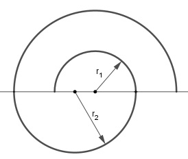
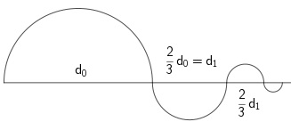

Aufgabe 92
Bestimmen Sie eine explizite und eine rekursive
Darstellung der Glieder der Folge der
dargestellten 'Wurzelschnecke'.
 Explizit: an =
In die Lücke in der Wurzel gehört
die Zahl
Explizit: an =
In die Lücke in der Wurzel gehört
die Zahl
Wie löse ich Matheaufgaben?
Folgen und Reihen
Sie sehen eine gelbes Eingabefeld oder
den Schalter: Lösung.
Tragen Sie Ihr Ergebnis ein, prüfen Sie es
oder starten Sie eine Lösung.
Aufgabe 72 Im luftleeren Raum fällt ein Körper in der 1. Sekunde etwa 4,9 m, in jeder folgenden Sekunde 9,8 m mehr als in der vorhergehenden. a) Wieviel m fällt er in der 10. Sekunde? Es sind m b) Wie groß ist der Fallweg in den ersten 10 und in den folgenden 10 Sekunden?
Aufgabe 73 Die Schar von Halbkreisen bildet eine Spirale.

a) Wie lang ist der 10. Halbkreisbogen, wenn r1 = 1 cm und r2 = 1,5 cm betragen? b) Wie groß ist die Gesamtlänge l der Spirale bis einschließlich 10. Halbkreisbogen?
Aufgabe 74 Ein Kreis soll so in 6 Ausschnitte geteilt werden, dass die jeweiligen Zentriwinkel um 10° größer werden. Bestimmen Sie die Folge der Zentriwinkel. a1 = °
Aufgabe 75 a) Wie groß ist die Summe aller durch 11 teilbaren zweiziffrigen Zahlen? b) Zwischen die Zahlen 7 und 16 sollen 5 Zahlen so eingefügt werden, dass eine arithmetische Folge entsteht. Bestimmen Sie die Glieder der Folge. Wie groß ist ihre Summe?
Aufgabe 76 a) Die Entwicklung eines Films kostet 1,60 € und jedes Bild 0,23 €. Wie lautet die explizite Beschreibung dieser Zahlenfolge für eine beliebige Anzahl Bilder? Wie lautet das 72.Folgeglied? b) Messungen bei Bohrungen haben ergeben, dass die Temperatur um 3° je 100 m Bohrtiefe zunimmt, wenn man von einer Temperatur von 10° in 25 m Tiefe ausgeht. b1) Wie hoch ist die Temperatur in einer Tiefe von 2 300 m? Es sind ° b2) In welcher Tiefe sind es 100°? b3) Aus welcher Tiefe kommt Heilwasser, das eine Temperatur von 45° hat?
Aufgabe 77 a) Eine Kirchuhr schlägt nur ganze Stunden. Bsp. um 2 Uhr 2 Schläge, um 5 Uhr 5 Schläge usw. Wieviel Schläge sind das in 3 Tagen? b) Eine Kirchuhr schlägt die ganzen Stunden und zu jeder vollen Stunde viermal, zu jeder Viertelstunde einmal, zu jeder halben Stunde zweimal und zu jeder Dreiviertelstunde dreimal. Wieviel Schläge sind das an einem Tag?
Aufgabe 78 a) Das Bohren eines Schachtes für eine Heizung mit Erdwärme kostet für den ersten Meter 5 € und für jeden weiteren m 1,25 € mehr. Wie teuer wird ein 1 200 m tiefer Schacht? Es sind € b) Am ersten Tag erreicht eine Bohrung eine Tiefe von 84 m. An den nachfolgenden Tagen sind es 4 m weniger als am Tag zuvor. Wie tief ist die Bohrung maximal? Am wievielten Tag ist eine Tiefe von 900 m erreicht?
Aufgabe 79 a) Berechnen Sie die Summe der ersten 25 Glieder der Folge (-2; 0; 2; 4 ...) b) Wie groß ist die Summe der ersten 100 ungeraden Zahlen?
Aufgabe 80 a) Wie groß ist die Summe der ungeraden Zahlen zwischen 300 und 800? b) Wie groß ist die Summe aller natürlichen dreiziffrigen Zahlen, die durch 23 ohne Rest teilbar sind? s =
Aufgabe 81 a) Wie groß ist die Summe aller ohne Rest durch 3 teilbaren geraden Zahlen zwischen 100 und 1 000? b) Wie groß ist die Summe aller durch 7 mit dem Rest 4 teilbaren ungeraden Zahlen zwischen 50 und 500?
Aufgabe 82 a) Die Summe des 3. und 11. Gliedes einer arithmetischen Folge ist gleich 34, die des 7. und 12. Gliedes gleich 44. Berechnen Sie das 20. Glied und die Summe der ersten 35 Glieder. b) Die Summe des 5. und 8. Gliedes einer arithmetischen Folge ist gleich 1, die des 2. und 6. Gliedes gleich 0. Berechnen Sie die Summe der ersten 12 Glieder. s12 =
Aufgabe 83 a) Fährt man in einem Bergwerk nach unten, nimmt die Temperatur alle 35 m um 1° zu. Wie hoch ist die Temperatur in einer Tiefe von 1 330 m, wenn an der Oberfläche eine Temperatur von 10° gemessen wird? b) Ein Dach hat Trapezform. In der obersten Reihe liegen 40 Ziegel. In jeder folgenden liegen jeweils 2 mehr. Wieviel Ziegel liegen auf dem Dach, wenn es aus 32 Reihen besteht?
Aufgabe 84 a) Ein Körper legt im freien Fall in der ersten Sekunde 5 m zurück, in jeder folgenden Sekunde 10 m mehr als in der vorhergehenden. Welchen Weg hat er nach 15 s zurückgelegt? b) Ein Ball wird senkrecht nach oben geschossen und erreicht in der ersten Sekunde eine Höhe von 60 m. In den folgenden Sekunden steigt er um jeweils 10 m weniger als in den vorhergehenden. Wie hoch und wie lange steigt er? Es sind m
Aufgabe 85 a) Auf eine Rakete wirkt in 3 000 m Höhe 140 s lang ihre maximale Beschleunigung von 35 m/s². Wie hoch ist ihre Endgeschwindigkeit, wenn sie in dieser Höhe eine Geschwindigkeit von 245 m/s hatte? b) Auf eine Spule von 50 mm Länge und einem Durchmesser von 20 mm werden 15 Lagen Kupferdraht mit einem Durchmesser von 0,5 mm gewickelt. b1) Welchen Durchmesser d hat die gewickelte Spule? b2) Wieviel Draht braucht man?
Aufgabe 86 a) Eine arithmetische Folge besteht aus 8 Gliedern, deren Summe 165 beträgt. Die Summe der ersten 5 Glieder beträgt 75. Wie lauten die Glieder der Folge, und wie groß ist die Summe der ersten 4 Glieder? s4 = b) Die Summe der ersten 5 Glieder einer arithmetischen Folge beträgt 125. Die Summe der Quadrate dieser Glieder beträgt 4 125. Wie lauten die 5 Glieder der Folge?
Aufgabe 87 a) 5, 11, 17 ... seien die Anfangsglieder einer arithmetischen Folge. a1) Ab welchem Glied sind die Glieder der Folge größer als 10 000? a2) Ab welchem Glied ist die Teilsumme der Glieder größer als 100? b) Wieviel Glieder der Folge der natürlichen ungeraden Zahlen ab 1 muss man addieren, wenn ihre Summe 1 600 sein soll?
Aufgabe 88 a) Wieviel Glieder der Folge der natürlichen geraden Zahlen ab 2 muss man addieren, wenn ihre Summe 1 640 sein soll? n = b) Ein Körper hat eine Geschwindigkeit von 600 km/h. Wie lange dauert es bis zum Stillstand, wenn seine Geschwindigkeit um 9,8 m/s abnimmt?
Aufgabe 89 a) Ein 180 m langer Draht mit einem Durchmesser von 2 mm wird auf eine Trommel mit einem Durchmesser von 3 cm und einer Länge von 40 cm gewickelt. Wieviel Lagen hat die fertige Wicklung? b) Fertige Flaschen werden nach der Herstellung so gestapelt, dass in der untersten Reihe 25 Flaschen liegen. In den Reihen darüber liegen über jeweils 2 Flaschen der darunterliegenden Reihe nur 1 Flasche. Wie viel Flaschen liegen in 10 Reihen?
Aufgabe 90 a) Ein Mechaniker verdient brutto 37 200 € im Jahr. Wie hoch ist sein Bruttogehalt im 25. Jahr, wenn er bis dahin nach Ablauf eines jeden Jahres eine monatliche Zulage von 40 € erhält? Wieviel hat er insgesamt nach Ablauf der 25 Jahre verdient? b) Ein Fahrzeug fährt bergabwärts. In der ersten Sekunde legt es 3 m und in jeder folgenden Sekunde 1,2 m mehr als in der vorhergehenden zurück. Welche Geschwindigkeit in km/h hat es nach 21 Sekunden? c) 6 000 € sollen so unter 12 Teilnehmern aufgeteilt werden, dass jeder folgende Teilnehmer 30 € mehr als der vorhergehende erhält. Wieviel € erhält der erste und wieviel der letzte Teilnehmer? Der erste erhält €
Aufgabe 91 Auf einem Konto befinden sich am Anfang eines Jahres 2 500 € zu einem festen Zinssatz von 5,2%. a) Geben Sie für den Kontostand nach 5 Jahren eine rekursive und eine explizite Darstellung der Folge an. b) Am Ende eines jeden Jahres hebt der Konto- inhaber 200 € ab. Geben Sie für den sich verändernden Kontostand eine rekursive Darstellung und den Kontostand nach 5 Jahren an.
Aufgabe 92 Bestimmen Sie eine explizite und eine rekursive Darstellung der Glieder der Folge der dargestellten 'Wurzelschnecke'.
Aufgabe 93 Der wievielte Halbkreisbogen hat eine Länge von einem Millionstel der Länge des Anfangsbogens?

Aufgabe 94 a) Die Bevölkerungszahl eines Landes mit 5 000 000 Einwohnern wächst jährlich um 1%. Dazu kommen 10 000 Einwanderer pro Jahr. Wie groß ist seine Bevölkerung nach 20 Jahren, bei gleichbleibenden Zuwachsbedingungen? b) Eine Stahlkugel fällt aus einer Höhe von einem Meter auf eine Metallplatte und springt von dort auf 95% der ursprünglichen Höhe zurück. b1) Auf welche Höhe h springt die Kugel nach dem 5. Aufschlag? b2) Nach wievielen Aufschlägen n springt sie auf die Hälfte der Ausgangshöhe? Nach b3) Welchen Weg s hat die Kugel insgesamt bis zum fünften Aufschlag zurückgelegt?
Aufgabe 95 Ein Autofahrer hat aus Versehen den 60 l Tank seines Fahrzeugs mit Diesel minderwertiger B-Qualität gefüllt. Um wieder A-Qualität in den Tank zu bekommen, tankt er nach einem Verbrauch von 40 l Tankinhalt 40 l A-Qualität zu dem Rest im Tank dazu. a) Wieviel l der B-Qualität befinden sich nach 5-maligem wie beschriebenen Tanken noch im Tank? b) Wie oft muss er wie beschrieben tanken, damit der Anteil der B-Qualität auf 0,01 l gesunken ist?
zurück